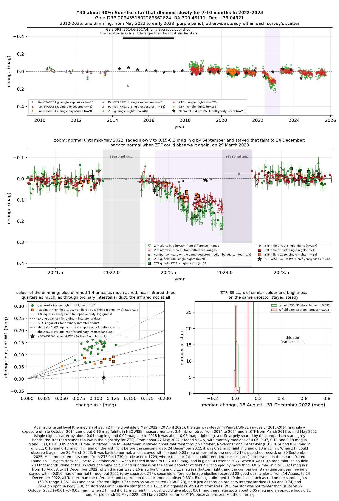
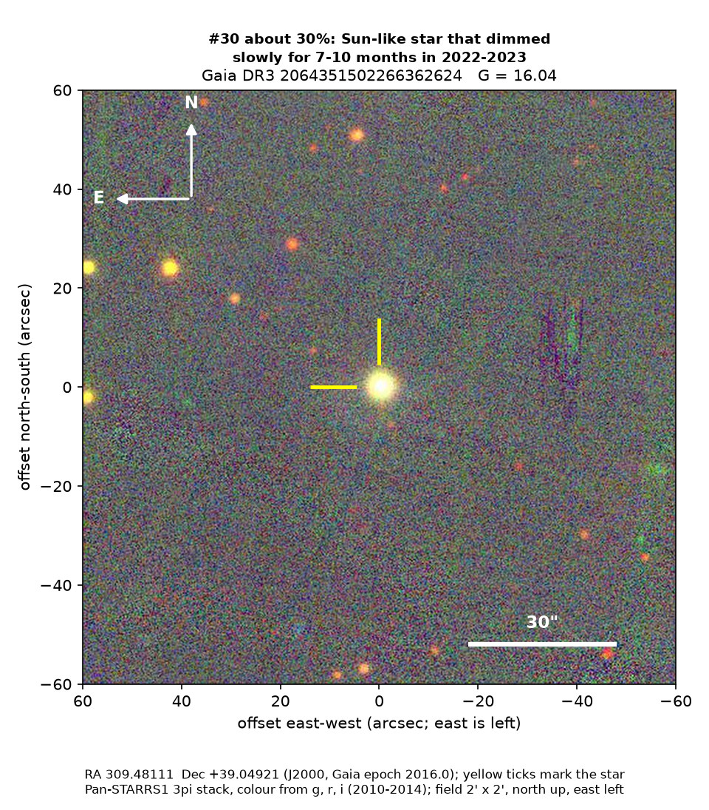
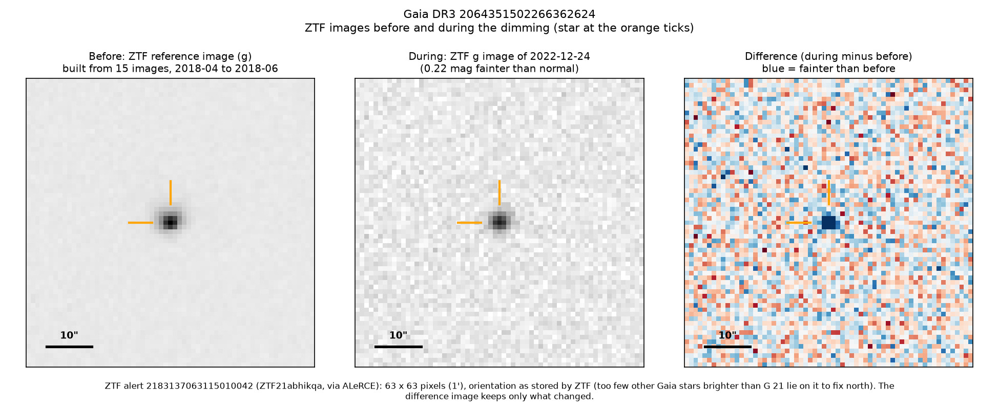

Professor of Mathematics
Paata Ivanisvili
Department of Mathematics, University of California, Irvine

Candidate 30: a Sun-like star that dimmed slowly for seven to ten months
Why this estimate. The dimming is almost certainly real: the ZTF survey telescope at Palomar Observatory in California recorded it in three filters and on two detectors while 35 stars of similar colour and brightness on the main detector stayed steady, and ASAS-SN, a worldwide network of small telescopes, saw it too. Its colour is that of ordinary interstellar dust. But the dimming is shallow, its end was not observed, the star lies towards the young stars of Cygnus X, and there is no usable spectrum.
How to read the pictures. The finder chart shows a patch of sky two arcminutes across, about a fifteenth of the Moon’s width, with north up and east to the left. The star sits between the two yellow ticks, and the white bar is 30 arcseconds long. On a light curve the vertical axis is magnitude, a brightness scale on which larger numbers mean fainter stars, and it is drawn so that down means fainter. Purple shading marks the dimming, and grey shading the months when the star could not be observed. Each survey uses slightly different filters, so each is compared with its own normal level. The ZTF pictures show ZTF’s reference image of the star, an image taken during the dimming, and the difference between the two, in which only what changed remains: blue means fainter and red brighter.

What changed. The star is very much like the Sun in temperature and luminosity, about 910 parsecs (3,000 light-years) away, close to the mid-plane of the Milky Way. ZTF saw it steady from 2018 to mid-May 2022. From late May it faded slowly, and by September it had lost about a sixth of its green light and a tenth of its red light. It stayed about that faint until 24 December 2022, the last night before it stood too low in the night sky for ZTF; on 29 March 2023, when ZTF could observe it again, it was back to normal. ZTF’s alert system, which compares each new image with a reference image, flagged it 28 times, and ASAS-SN had it about 0.13 magnitudes faint on average from August to December 2022.
Why it might matter. Dust passing in front of the star is the likeliest cause. Green light dimmed 1.40 times as much as red, and near-infrared light 0.73 times as much, close to the 1.40 and 0.74 of ordinary interstellar dust; an opaque body would dim all colours equally, and starspots on a Sun-like star give only about 1.1 to 1.2 for green against red. NEOWISE found the infrared light unchanged in October 2022, as dust would leave it, though a red source 6 arcseconds away, blended with the star in its images, weakens that test. An eclipse by another star lasts hours or days, not months, and two ZTF detectors and ASAS-SN make an instrumental fault unlikely.
The main alternative is a young star with a dusty disc: the star lies towards Cygnus X, a rich star-forming region; three young clusters lie at its own distance 1.0 to 1.7 degrees away; and a machine classifier labels its light curve as a young star’s. But it moves 26 to 53 km/s differently from every cluster within 2 degrees, sits on the main sequence and shows no warm dust and no hydrogen emission. A good spectrum would settle its type and age.
No record of the dimming could be found. SIMBAD has no entry for the star, Gaia lists no variability, and VSX, the variable-star index, has nothing within 30 arcseconds. It is in none of the variable-star, young-star or cluster catalogues consulted, nor among the dimming stars of Tzanidakis et al. (2025), and there is no Transient Name Server entry, Gaia alert or paper giving its Gaia number. ZTF’s alert system holds only machine-generated classifications for it.
- Star
- Gaia DR3 2064351502266362624, a Sun-like star of spectral type about G2 to G3
- Location
- RA 309.48111°, Dec +39.04921° (J2000), in Cygnus, 1.3 degrees south of the Milky Way’s mid-plane
- Distance
- about 910 parsecs (3,000 light-years)
- Brightness
- Gaia G = 16.04, far too faint for the eye or a small telescope
- Probability
- This candidate is unconfirmed. The percentage under the title is an estimate of the chance that it is a real, previously unrecorded case of the kind described. The estimate has not been checked by outside experts. See the introduction to all thirty-two candidates.
- Caveat
- There is no usable spectrum: one taken by the LAMOST survey in 2014 has too little signal. How quickly the star recovered is unknown, and Gaia’s own model of the star puts it at 770 parsecs, which the parallax excludes. Four other stars, candidate 18, candidate 19, candidate 21 and candidate 27, also dimmed during 2022, but on other ZTF fields 41 to 65 degrees away, so a shared instrumental cause is unlikely.

